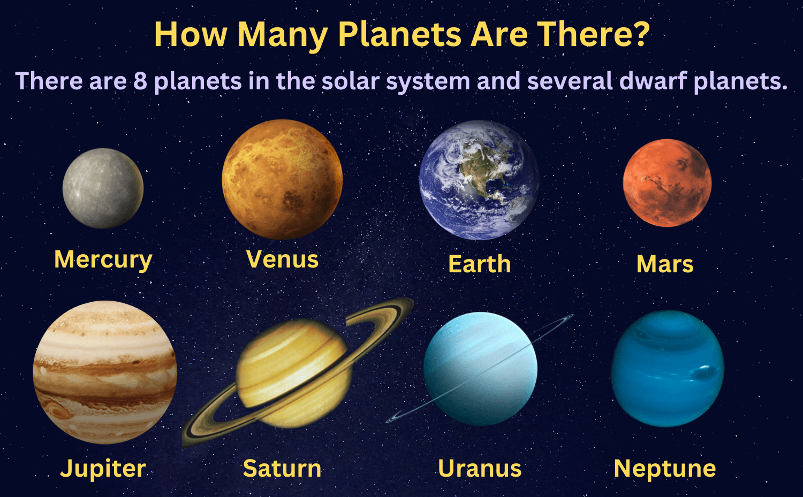

Space Quiz
This test will analyse how much the user has learned through the website. This test will consist of three multiple-choice questions. Once the test is submitted, JavaScript analyses the answers and gives the final score.
Your score will appear here after you submit the quiz.
Why Use a Quiz?
A quiz can be regarded as a useful interactive element that allows users to evaluate how well they understand the content covered by the website. In addition, a quiz adds value to user interaction and illustrates the use of JavaScript when handling forms and providing feedback.
The quiz webpage has been redesigned to include further learning resources that allow users to learn, watch, and then test themselves all on one page.
Solar System Poster
This picture represents all eight planets in our Solar System. This is supplementary information that can be learned from the quiz page and helps in relating the questions to the topic of the website.

5 Quick Facts about planets in the solar system
This extra video gives more information about space and makes the quiz page more engaging.